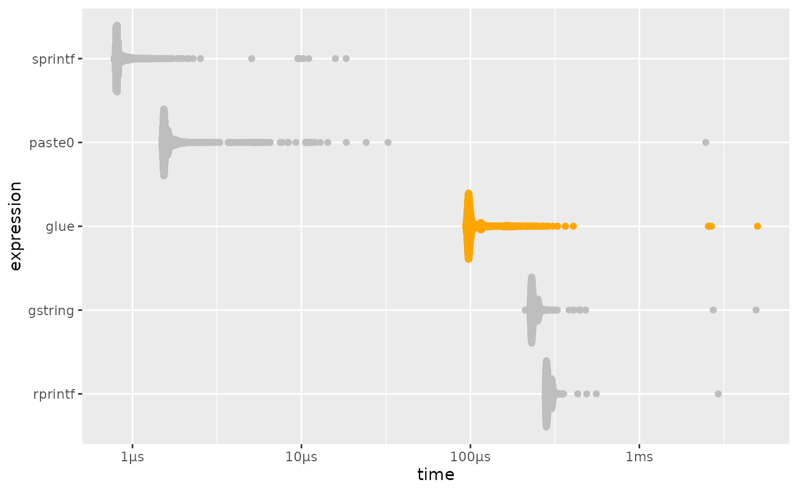

Glue is advertised as
Fast, dependency free string literals
So what do we mean when we say that glue is fast. This does not mean glue is the fastest thing to use in all cases, however for the features it provides we can confidently say it is fast.
A good way to determine this is to compare it’s speed of execution to some alternatives.
-
base::paste0(),base::sprintf()- Functions in base R implemented in C that provide variable insertion (but not interpolation). -
R.utils::gstring(),stringr::str_interp()- Provides a similar interface as glue, but using${}to delimit blocks to interpolate. -
pystr::pystr_format()1,rprintf::rprintf()- Provide a interfaces similar to python string formatters with variable replacement, but not arbitrary interpolation.
Simple concatenation
bar <- "baz"
simple <-
microbenchmark::microbenchmark(
glue = glue::glue("foo{bar}"),
gstring = R.utils::gstring("foo${bar}"),
paste0 = paste0("foo", bar),
sprintf = sprintf("foo%s", bar),
str_interp = stringr::str_interp("foo${bar}"),
rprintf = rprintf::rprintf("foo$bar", bar = bar)
)
print(unit = "eps", order = "median", signif = 4, simple)
#> Unit: evaluations per second
#> expr min lq mean median uq max neval
#> rprintf 278.90 1827 1901 1894 2002 2222 100
#> gstring 18.84 2140 2242 2240 2358 2779 100
#> str_interp 172.20 2894 3117 3101 3368 4207 100
#> glue 1168.00 5934 6614 6412 7038 10610 100
#> paste0 121600.00 352000 455400 440500 546500 892900 100
#> sprintf 86690.00 344500 530600 504900 615200 1374000 100
plot_comparison(simple)
While glue() is slower than paste0,sprintf() it is twice as fast as str_interp() and gstring(), and on par with rprintf().
paste0(), sprintf() don’t do string interpolation and will likely always be significantly faster than glue, glue was never meant to be a direct replacement for them.
rprintf() does only variable interpolation, not arbitrary expressions, which was one of the explicit goals of writing glue.
So glue is ~2x as fast as the two functions (str_interp(), gstring()) which do have roughly equivalent functionality.
It also is still quite fast, with over 6000 evaluations per second on this machine.
Vectorized performance
Taking advantage of glue’s vectorization is the best way to avoid performance. For instance the vectorized form of the previous benchmark is able to generate 100,000 strings in only 22ms with performance much closer to that of paste0() and sprintf(). NB. str_interp() does not support vectorization, so were removed.
bar <- rep("bar", 1e5)
vectorized <-
microbenchmark::microbenchmark(
glue = glue::glue("foo{bar}"),
gstring = R.utils::gstring("foo${bar}"),
paste0 = paste0("foo", bar),
sprintf = sprintf("foo%s", bar),
rprintf = rprintf::rprintf("foo$bar", bar = bar)
)
print(unit = "ms", order = "median", signif = 4, vectorized)
#> Unit: milliseconds
#> expr min lq mean median uq max neval
#> sprintf 13.82 14.00 14.34 14.17 14.36 19.71 100
#> paste0 15.70 16.25 16.58 16.54 16.83 17.98 100
#> glue 19.80 20.55 21.12 20.94 21.35 27.95 100
#> gstring 33.89 34.79 35.44 35.33 35.66 41.22 100
#> rprintf 54.73 55.22 56.11 55.68 56.30 62.63 100
plot_comparison(vectorized, log = FALSE)
pystr is no longer available from CRAN due to failure to correct installation errors and was therefore removed from further testing.↩